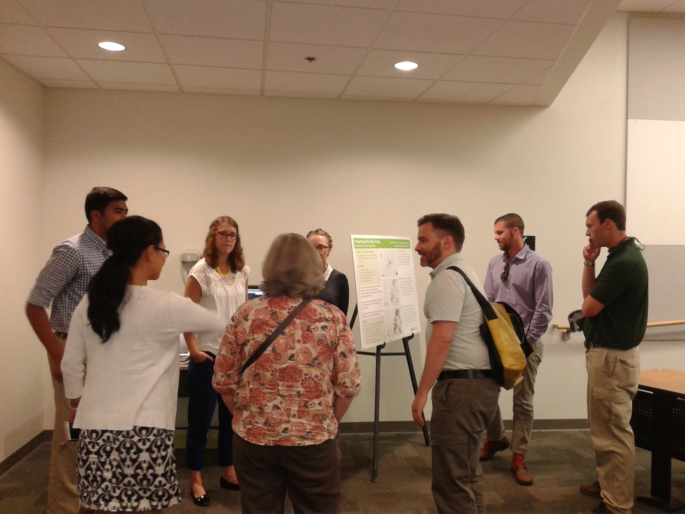
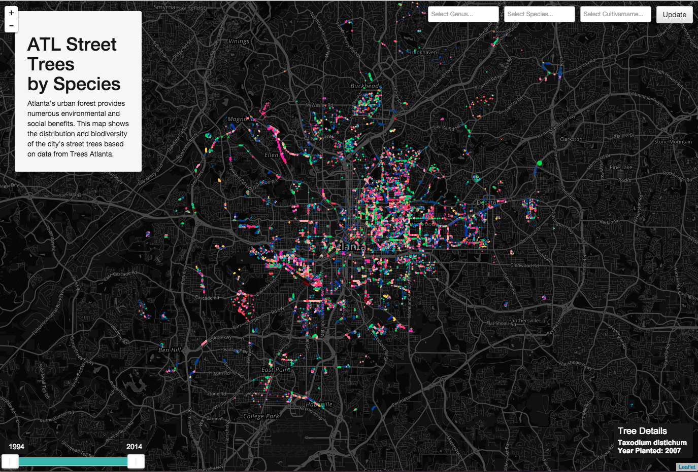
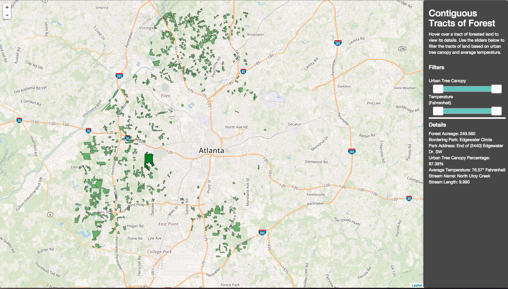

Summary
I participated in the Data Science for Social Good program at Georgia Tech, a 10-week summer program where teams tackle problems from the city and local nonprofits. I was part of a three-person team - the other two members were Computer Science students. Our project was to assist non-profit Trees Atlanta and the Atlanta Tree Conservation Commission as they work to preserve Atlanta’s urban tree canopy. Specifically, our task was to help them through available data. Working closely with representatives from the organizations, we developed three applications to make their work easier and more efficient.
My role: ArcGIS data wrangler and mapmaker, informal UI designer, project page designer and developer, overall team member: meeting with clients, researching the problem space
Our final deliverable can be viewed on its website here.
Process
We started by researching the problem space, which included remote sensing, tree maintenance at a city level, urban tree canopy, and benefits of trees. We talked with our partners, one from the City of Atlanta’s Tree Conservation Commission, who is responsible for tree management and policymaking, and the other from Trees Atlanta, who is responsible for locating areas to plant trees as contracted by City of Atlanta. We also joined the member of Trees Atlanta during a scouting trip out in the city. By interviewing and observing our partners, we learned that they have a lot of various needs. Given the time frame and scope of our project, we identified three specific problems to solve.
Throughout our process, we communicated with our partners through weekly meetings. These involved discussions about the structure and content of the data, our current solution ideas and testing of the current iterations. A midterm project presentation helped guide our process. As with many data-based projects, we spent a large chunk of time on data wrangling - combining relevant datasets in ArcGIS, formatting, etc. This left little time for application design, so we rapidly iterated over working solutions. We spent the last week on documentation, in hopes that future teams will be able to continue work on design detail and usability analyses.

Problem and Solution 1
Problem: Current records of trees planted by Trees Atlanta existed as a spreadsheet and part of a basic database. The records included information like genus, species, location, and year planted. This information was only in list format, which provided no physical reference and was not a presentable format for the public.
Solution: To give Trees Atlanta a visual way to explore and present their data, a record of their work, we decided to develop an interactive, web-based map using Leaflet and D3. With this solution, the location-based data can be appropriately viewed geographically, and be used in presentations.
Problem and Solution 2
Problem: One of the problems we identified during our conversations is the process by which Trees Atlanta finds new locations to plant trees, to fulfill contract work by the City of Atlanta. The current process for finding locations is centered around individual knowledge and semi-random driving around the city looking for locations.
Solution: To optimize this process, as well as provide information to the unexperienced, we designed and developed an interactive map of Atlanta broken down by property parcels. I led the work on the user interaction. The user can prioritize the parcels to see which ones might have more space and need for new tree plantings, thus guiding their scouting process in the field.
Challenge: The biggest challenge in designing the user interface was helping the user understand that they can change the prioritization model based on three factors: temperature, urban tree canopy, and impervious surfaces. The color of the parcels change based on the numbers in the model. To enable the user to do this, we created sliders. For example, if the slider is all the way on the left for the Urban Tree Canopy weight, then the model prioritizes parcels with a low urban tree canopy.
Problem and Solution 3
Problem: Another need we addressed centered around the Tree Conservation Commission’s responsibility for conserving large tracts of forest. They wanted to know not only where large areas of forest exist in the city, but also related information like property type, owner, value, and tree cover percentage.
Solution: Similar to our previous solution, we designed and developed an interactive map where the user can view contiguous tracts of forest and which parcels they are made up of, with all of the relevant information.
Project Conclusion
This project was especially satisfying because I felt like I was able to directly improve the city by working with a council and a non-profit. These organizations have a better understanding of how data can help them, and have tools that they can use in their daily work. It is also one of my favorite projects because I learned about the impact of both data and trees.
I gained a wider understanding of data and data-based decision making, as well as an appreciation for how much work and time goes into maintaining an urban tree canopy. Our project was covered by a few news sources, including NPR. We wrote a short paper for Data for Good by Bloomberg, which was accepted. The final presentations for the internship program were held at General Assembly in Atlanta. I and one other team member attended the workshop at Bloomberg’s headquarters in New York City.